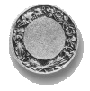

Bas Relief - The entire surface of the monument is cut away, leaving the flowers in bas relief on top of the other surface.
Memorial guide
Types of Carving
There are many techniques for carving stone or etching images into a stone surface. Here are four of the most popular processes.

Etching - Typically used on black granite, this technique cracks the surface of the granite using a diamond-tipped tool or a laser. When the granite's polished surface is etched it creates a high contrast image on the stone. This is popular for photos and portraits.

Flat Carving or Line Carving - This process involves sandblasting an image (of a flower, for example) on the stone. There is no dimensioning or relief given to the carving.


Shaped Carving - This is a time-consuming technique that requires years of training with sandblast tools. This process involves shaping the petals and leaves of flowers with a special sandblast nozzle. Shaped carving gives depth and a sense of reality to the carvings on a monument.